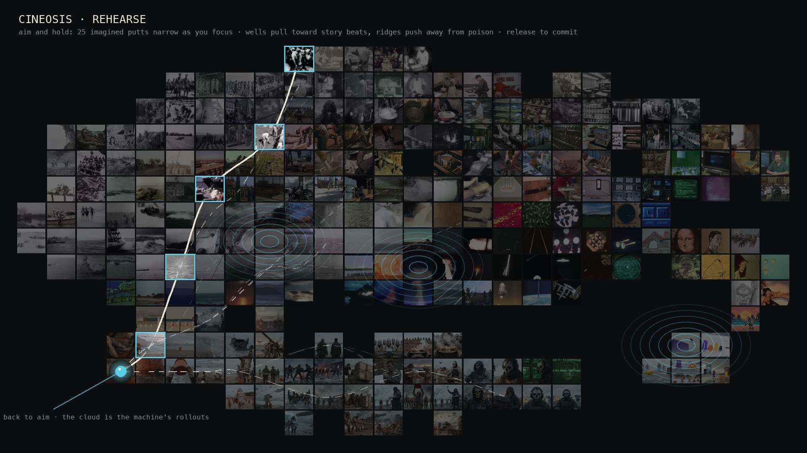
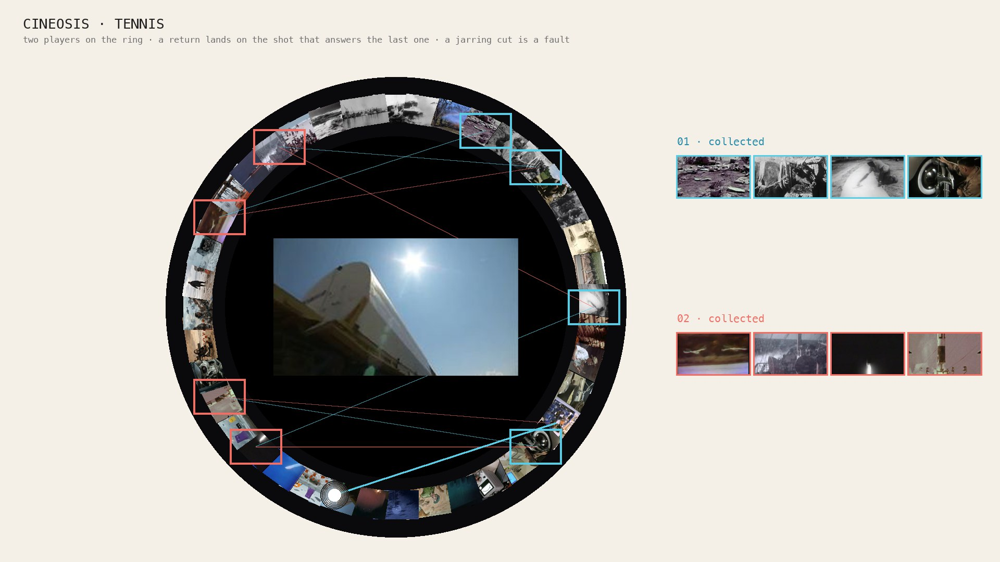
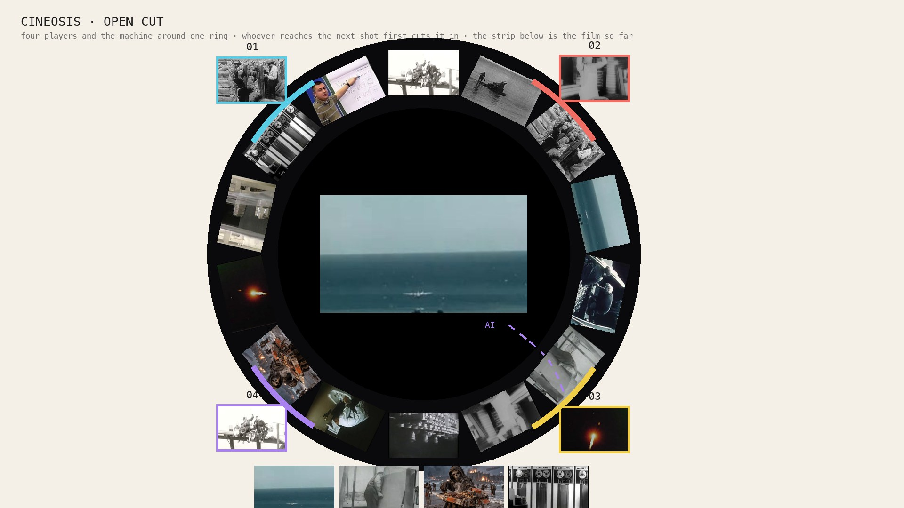
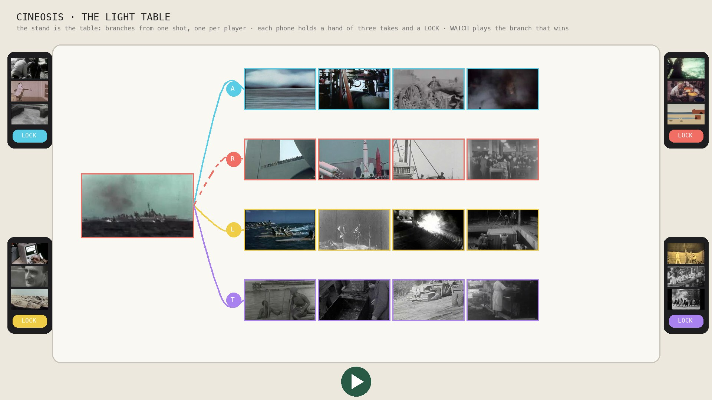
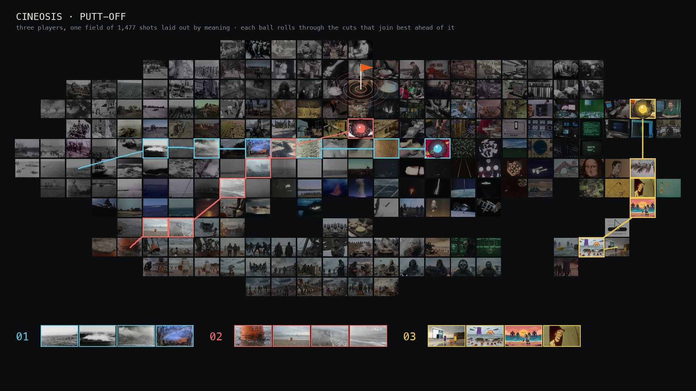
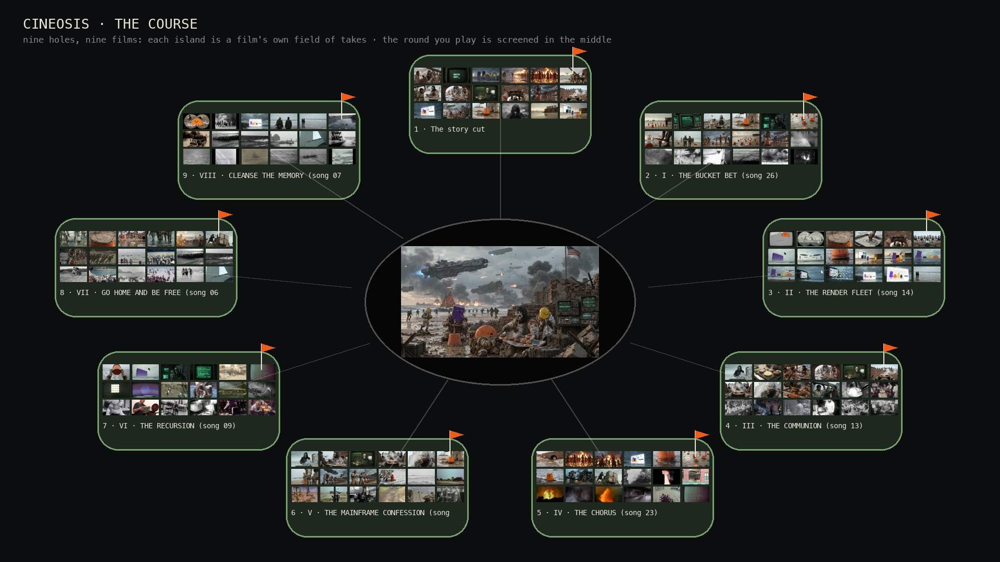
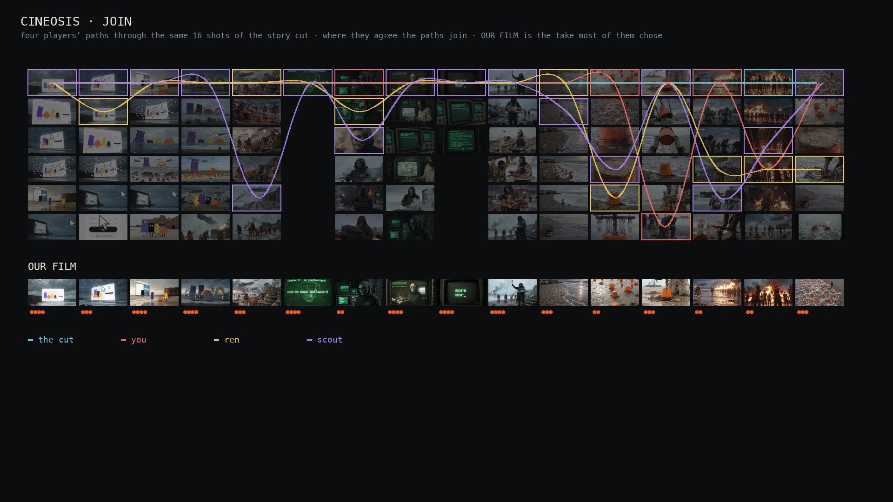

CINEOSIS · LUDENS
Editing as play. The ball's line of flight is the cut: every shot it crosses goes into the film, for as long as the ball is over it, so speed is rhythm. You see the exact cut before you commit it; nothing is random. The lab’s cut critic shapes the land: a good cut is a hollow, a jarring cut is a hill. Every game plays over the Slopfeeder field of 1,469 shots laid out by meaning, and you choose which footage is in play: AI pickups or archive, chapter, world, era. At the end of every game, WATCH plays what you made as real film.

PUTT-OFF
Golf, after PUTT-OP. Putt across the field; wherever the ball rests is your next shot. Aim, hold to narrow the forecast, burn once mid-roll, rewind. Holes end on the story’s own shots.
1–4 players on one screen
TENNIS
Tennis for Two through a ring of shots. Every return is the next cut of the rally; where you send the ball picks your opponent’s next shot, and a jarring cut comes back hot.
vs the machine · two on one screen · online with a code
OPEN CUT
Both at once. Players around a round field putt in turn, and every shot must answer the last shot of the one film you are all making. Claimed shots are yours, and bumpers for everyone else.
2–4 seats, any of them the machine
THE TABLE
The light table, played on phones. Scan in; every phone is dealt a hand of shots from the one on the table; tap a card and it lands on your lane on the main screen, every seam scored live. Lock, vote, and the winning branch joins our film.
2+ phones around one screen (Party, choose The Table)Every game shares one header: FOOTAGE (AI or archive, chapter, world, era), LAYOUT (meaning, framing, colour, time, chapter), LENS (what makes a good cut: meaning, framing or colour, which reshapes the land) and LAND (how the data shapes the ground, with contours).
PLATES · THE WORLD THESE COME FROM


